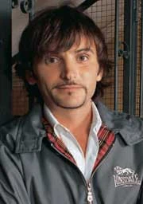
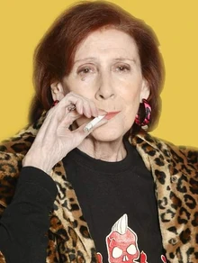
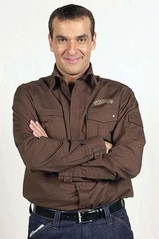
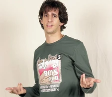

Frases Célebres
Las citas más icónicas del edificio Desengaño 21

Un poquito de por favor
La frase más famosa de toda la serie. Nació de un error real de Fernando Tejero durante los ensayos —confundió «un poco de por favor» y «un poquito de respeto»— y los guionistas la adoptaron de inmediato. Emilio la usa cuando el caos del edificio lo supera y necesita pedir calma sin conseguirla nunca.
Soy un profesional de la información
Con esta frase Emilio justifica su cotilleo permanente, su escucha de conversaciones ajenas y su tendencia a interferir en la vida de todos los vecinos. Para él, estar al tanto de todo no es una manía: es una responsabilidad profesional.
Buenos días nos dé Dios
El saludo matinal de Emilio a cada vecino que pasa por la portería. Dicho siempre con el mismo tono entre servil y condescendiente, se convirtió en uno de los tics verbales más reconocibles del personaje.
Yo no he dicho nada, yo no sé nada
El escudo de Emilio cuando le pillan difundiendo un rumor o revelando un secreto ajeno. Inmediatamente después de haberlo contado todo, niega cualquier responsabilidad con una convicción absoluta.
¡Yo no pago otra derrama!
El grito de guerra de Concha ante cualquier gasto comunitario. Sin importar cuál sea la avería, la cuantía o la necesidad, su respuesta es siempre la misma. Se convirtió en el símbolo de la resistencia del propietario contra los gastos de comunidad.
¡Váyase, señor Cuesta, váyase!
La forma de Concha de despachar al presidente de la comunidad cada vez que éste intenta mediar, explicar o imponer alguna decisión. Dicho con un desprecio soberano que no admite réplica, es uno de los momentos más celebrados por el público.
¡Chorizo! ¡Ladrón! ¡Sinvergüenza!
El repertorio de insultos de Concha hacia Juan Cuesta. Para ella, el presidente de la comunidad es fundamentalmente un corrupto que usa su cargo para beneficio propio, y no tiene ningún reparo en decirlo en voz muy alta.
¡Esto es una vergüenza! ¡Una vergüenza nacional!
La escala de los problemas vecinales, según Concha, siempre es nacional. Una gotera, una plaza de aparcamiento usurpada o un portal sin barrer merecen la misma indignación que un escándalo de Estado.
Queridos convecinos...
El inicio ritual de todas las juntas de vecinos. Juan pronuncia estas dos palabras con una solemnidad desproporcionada, como si fuera a dirigirse al Parlamento. Lo que sigue a continuación es siempre caos total.
¡Qué follón!
La reacción de Juan ante el caos permanente del edificio. Sintetiza a la perfección su papel en la serie: el hombre que siempre llega tarde para evitar los problemas y solo a tiempo para constatar que ya existen.
El orden del día contempla los siguientes puntos...
El inicio protocolario de las juntas de vecinos. Juan intenta dar a sus reuniones un formato parlamentario que nunca se cumple, porque los vecinos interrumpen, gritan y se van antes de llegar al tercer punto.
Como presidente de esta comunidad, y en nombre de todos los vecinos...
El recurso habitual de Juan para dar peso a sus decisiones. Invocar su cargo presidencial es lo único que tiene para hacer valer su autoridad, lo que lo convierte en el blanco favorito de Concha.
¡El chalé, Juan, el chalé!
El sueño eterno de Paloma. En cada momento de debilidad de Juan, en cada promesa, en cada ocasión en que ella percibe una oportunidad de ascenso social, aparece el chalé. No cualquier chalé: el suyo, con jardín, en una urbanización.
¡Y punto en boca!
La frase con la que Paloma zanja cualquier conversación en la que ha tenido la última palabra. Dicha con una rotundidad definitiva, no admite réplica. Fue también su última frase en la serie, pronunciada justo antes de caer al patio interior.
Los Cuesta somos gente de posición
El deliro de grandeza de Paloma en una sola frase. Para ella, vivir en un piso de segunda planta en Desengaño 21 es compatible con pertenecer a la élite social española, siempre y cuando nadie lo contradiga.
¡Eso es porque tú no tienes clase, Juan!
El reproche más frecuente de Paloma a su marido. Para ella, Juan carece del refinamiento necesario para alcanzar la posición social que ella considera que merecen, lo que convierte su matrimonio en una lucha constante entre aspiración y realidad.

Tú, ignorante de la vida...
El preludio obligatorio de todas las reflexiones filosóficas de Mariano. Antes de compartir cualquier sabiduría —por inverosímil que sea— necesita dejar claro que su interlocutor parte de una posición de ignorancia total.
Soy metrosexual y pensador
La autodescripción favorita de Mariano. En los años en que la palabra «metrosexual» era nueva en el vocabulario español, Mariano la adoptó como seña de identidad, combinándola con una vocación filosófica que nadie a su alrededor comparte.
Las enciclopedias son el alimento del alma
La justificación que Mariano usa para defender su trabajo como vendedor de enciclopedias, un oficio que nadie en el edificio respeta. Para él, cada enciclopedia vendida es un acto de servicio cultural.

Radio Patio informa...
Con esta frase Marisa da paso a las últimas noticias del edificio, convirtiéndose en la directora de informativos de la red de cotilleos de Desengaño 21. La expresión «Radio Patio» pasó al lenguaje coloquial español para referirse a los rumores de vecindario.
Virgencita, virgencita, que me quede como estoy
La oración favorita de Marisa en los momentos de pánico. Ante cualquier novedad que amenace la tranquilidad del edificio, Marisa prefiere el inmovilismo a la incertidumbre del cambio.
¿Y tú qué sabes, Vicenta?
El recurso habitual de Marisa para desautorizar a su hermana. Aunque viven juntas y comparten toda la información del edificio, Marisa siempre encuentra la forma de hacer sentir a Vicenta que su interpretación de los hechos es inferior a la suya.
Voy a acabar sola y amargada
El diagnóstico de Belén sobre su propio futuro. Dicho con una resignación casi cómica, se convirtió en el lema generacional de una joven que encadena trabajos precarios y relaciones fallidas sin perder del todo el sentido del humor.
Mi vida es una mierda
La valoración global de Belén sobre su situación vital. Directa, sincera e irrefutable según ella misma. Lo llamativo es que lo dice sin dramatismo, con la misma naturalidad con la que se comenta el tiempo.
Por lo menos tengo trabajo... bueno, de momento
La resignación laboral de Belén. A lo largo de la serie acumuló más de veinte empleos distintos —camarera, modelo, empleada de moda, actriz de anuncios, cool-hunter, telefonista…— siempre con la certeza de que el siguiente despido era inminente.
Me estoy hiperventilando
El anuncio de Isabel ante cualquier situación de estrés mínimo. Una discusión de portal, una factura inesperada o un comentario mal interpretado son suficientes para desencadenar su crisis de hiperventilación, siempre acompañada de bolsa de papel y tés de hierbas.
Esta planta tiene propiedades energéticas muy especiales
Isabel aplica la homeopatía, las flores de Bach, el feng shui y cualquier terapia alternativa disponible a todos los problemas del edificio. Su fe en los remedios naturales es inversamente proporcional a su eficacia demostrada.
Necesito hacer un ritual de purificación
La respuesta de Isabel a las malas noticias. Antes de enfrentarse a cualquier problema, Isabel necesita limpiar las energías del espacio, lo cual implica velas, incienso y al menos veinte minutos de meditación que nadie a su alrededor puede permitirse.

¡Fernando! ¡Fernandoooo!
El grito más reconocible de Mauri, lanzado siempre desde el portal o desde las escaleras cuando necesita a su pareja con urgencia. El tono entre desesperado y teatral lo convirtió en uno de los momentos más celebrados de la serie.
Tú no me quieres. Nunca me has querido.
El detonante habitual de las discusiones de Mauri con Fernando. Ante cualquier malentendido, por pequeño que sea, Mauri interpreta inmediatamente una crisis existencial de pareja que Fernando tiene que desmontar con paciencia infinita.
¿Y eso qué es?
La pregunta perpetua de Vicenta ante cualquier novedad tecnológica, cultural o social. Su literalismo extremo la lleva a interpretar todo al pie de la letra, lo que genera malentendidos que sus vecinos tardan varios minutos en resolver.
Ay, Señor, qué cosas pasan en este edificio
El comentario de Vicenta al final de cada episodio o situación disparatada. Es la voz de la inocencia absoluta en un edificio donde todo el mundo tiene segundas intenciones, lo que la convierte en el personaje más querido del público.

Tengo esa en VHS y en DVD
La respuesta de Paco a cualquier conversación sobre cine o televisión. Su enciclopédico conocimiento del videoclub donde trabaja le hace saltar a la mínima referencia cinematográfica, convirtiéndose en el experto no pedido de todas las conversaciones de portal.